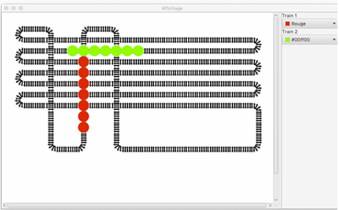
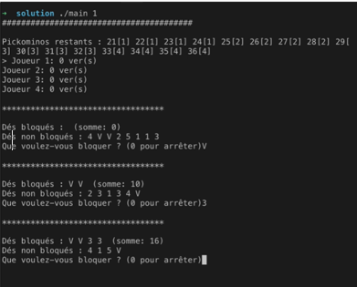
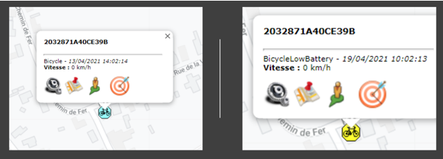
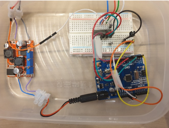
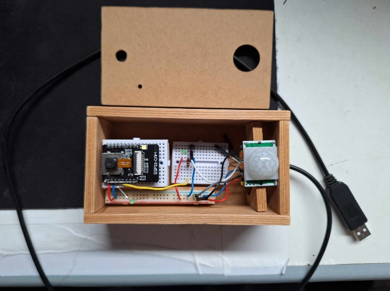
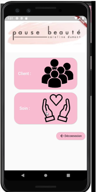

Je m'appelle Arthur Cartigny. Passionné par les avancées technologiques, j'adore me tenir informé des innovations qui transforment notre quotidien. Mon intérêt ne s'arrête pas à la simple curiosité, j'aime tester et observer ces nouvelles technologies en les analysant sous l'angle de l’Histoire et de l'évolution globale du monde.
Je suis une personne avide de connaissances, toujours en quête de nouveaux savoirs. Un de mes passe-temps favoris est de m'instruire constamment et de rester à la pointe des développements dans divers domaines.

Simulation de train
en Java

J’ai développé une simulation de train en utilisant le langage de
programmation Java. Mon programme permet de modéliser le trafic et les
interactions entre les trains et les voies. Au lieu d’implémenter une
automatisation complète habituellement réalisée, j’ai opté pour une
télécommande virtuelle pour contrôler les trains afin de permettre
d’adapter le mouvement du train à la demande.
Digitalisation du jeu
Pickomino en c++

J’ai entrepris de recréer le jeu de dés stratégique Pickomino en utilisant le
langage de programmation C++. Inspiré par le jeu de société original, j’ai
développé une version en invite de commande qui permet aux joueurs de
lancer des dés, de choisir des valeurs à conserver et de rivaliser pour
obtenir les précieux Pickominos.
Récuperation de données GPS

J’ai développé un programme qui récupère les données GPS à partir d’un
boîtier Invoxia en me connectant sur leur API et les envoie vers un
backend existant. Cette solution permet de surveiller efficacement la
position d’un vélo et le niveau de charge de la batterie. Cette solution
peut être adaptée à divers scénarios.

J’ai conçu un système où un Arduino contrôle un ruban RGB à l’aide
d’une télécommande infrarouge. Le ruban RGB est capable d’afficher une
variété de couleurs et d’effets lumineux.


En collaboration avec l’institut de beauté “Pause Beauté”, j’ai développé
une application mobile sur mesure pour simplifier leur gestion des clients
et des prestations. De plus, l’institut propose à ses clients une expérience
spéciale lors de leur anniversaire. Pour cela, j’ai mis en place un système
de lecteur de QR code utilisant un ESP32. Une fois le QR code scanné,
le système vérifie sa validité et détermine si le client a droit à une
réduction.